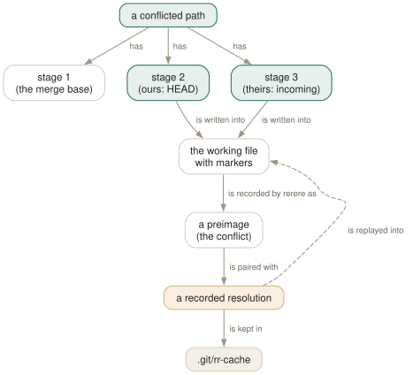

Day 17
Conflicts at scale
Strategies, sides, and teaching git to resolve the same conflict twice without you.
By the end of today you can
- choose between
-X oursand-s oursknowing that one of them throws away the other side's work entirely - take one side of a conflicted file, or rebuild its markers, without losing your place — and say which side is which during a rebase
- turn on rerere and let git replay a conflict resolution you have already made once
A conflict is three blobs and a choice
Day 4 showed that a conflicted path has three entries in the index — stage 1 the merge base, stage 2 ours, stage 3 theirs — and that the file on disk is git's attempt to show you all three at once. Today is about what to do when there are many conflicts, or the same ones keep coming back: choose a side per hunk, per path, or let git remember your choice from last time.
The machinery that produces conflicts is the merge strategy. Since 2.34 the default is ort, and in 2.52 the old name recursive is only a synonym for it — git-merge(1) says it “was redirected to mean ort in v2.50.0”. The others (resolve, octopus, ours, subtree) are special-purpose; you will name one on purpose perhaps once a year.
$ git merge -s nonsense topic
Could not find merge strategy 'nonsense'.
Available strategies are: octopus ours recursive resolve subtree.

-X), by path (--ours, --theirs), or by memory (a recorded resolution). Which stage counts as “ours” depends only on what HEAD is at that moment, which is why a rebase swaps them.-X ours is a preference; -s ours is a verdict
These two look like the same flag. They are opposite in scope. Take two branches that both change line 2 of f, where topic also adds a line to g:
$ git merge -X ours topic -m xours
Auto-merging f
$ cat f g
a
MAIN
c
one
topic-g
$ git reset --hard HEAD~1
$ git merge -s ours topic -m sours
$ cat f g
a
MAIN
c
one
-X ours is a strategy option: run the normal three-way merge, and wherever two hunks collide, take ours. The other side's non-conflicting work, like topic-g, still lands. -s ours is a strategy: produce a merge commit whose tree is identical to HEAD. The other branch contributes a parent and nothing else.
Choosing per path, and taking it back
When one file is best resolved wholesale — a lock file, generated code — pick a stage for that path and move on:
git checkout --ours f- Write stage 2 into the working file. Then
git add f. git checkout --theirs f- Write stage 3 into the working file.
git checkout -m f- Rebuild the conflicted file with markers, from the three stages. Your undo.
git log --merge- Show only the commits, from either side, that touched the conflicted paths.
git diff- In a conflict, a combined diff: two columns of
+/-, one per parent. git diff AUTO_MERGE- Only what you have changed since git wrote the conflicted files.
$ git checkout --theirs f && cat f
Updated 1 path from the index
a
TOPIC
c
$ git checkout -m f && cat f
Recreated 1 merge conflict
a
<<<<<<< ours
MAIN
=======
TOPIC
>>>>>>> theirs
c
Notice the markers after -m: ours and theirs, not HEAD and topic as in the original. The stage contents are the same; only the labels are lost.
rerere: resolve once, replay forever
rerere is “reuse recorded resolution”. With rerere.enabled, whenever a merge stops with a conflict, git saves the conflicted hunks as a preimage, keyed by their content. When you commit the resolved file, it saves your version as the postimage. The next time an identical conflict appears — in any merge, rebase or cherry-pick — it writes your resolution in for you.
$ git merge topic
Auto-merging f
CONFLICT (content): Merge conflict in f
Recorded preimage for 'f'
Automatic merge failed; fix conflicts and then commit the result.
$ printf 'a\nMAIN+TOPIC\nc\n' > f && git add f && git commit -qm 'merge topic'
Recorded resolution for 'f'.
$ git reset -q --hard HEAD~1 && git merge topic
Auto-merging f
CONFLICT (content): Merge conflict in f
Staged 'f' using previous resolution.
Automatic merge failed; fix conflicts and then commit the result.
The situations where this pays: rebasing a long-lived branch repeatedly onto a moving main; doing a trial merge to see what breaks, aborting it, and doing it for real later; and re-running an interactive rebase that you got wrong the first time. The recordings live in .git/rr-cache/; git rerere gc (which git gc runs) keeps a resolved record for 60 days and an unresolved one for 15 (gc.rerereResolved, gc.rerereUnresolved).
git rerere status lists the paths it is tracking, git rerere diff shows the resolution you are about to record, and git rerere forget f drops a bad recording. forget does not restore the markers; follow it with git checkout -m f.
Today's habit
Add the [rerere] block and forget about it; it costs nothing until the day it saves you an hour. When you hit a conflict, run git log --merge --oneline before you open the file, and when you reach for a side, say out loud what HEAD is right now.
Tomorrow: hooks — programs git runs for you at fixed points, and why cloning a repository does not bring its hooks along.
New vocabulary
Commands
| Command | Does |
|---|---|
git merge -X ours <branch> | Merge normally, but settle each conflicting hunk in favour of this side. Clean hunks from the other side still land. |
git merge -s ours <branch> | Record a merge that keeps this tree exactly. The other branch's changes are discarded. |
git checkout --ours <path> | During a conflict, take stage 2 for that path. In a rebase, stage 2 is the upstream. |
git checkout --theirs <path> | Take stage 3 for that path. In a rebase, stage 3 is your own commit being replayed. |
git checkout -m <path> | Re-create the conflict markers in a file you have mangled or resolved wrongly. |
git log --merge | During a conflict, list only the commits on either side that touch the conflicted paths. |
git diff AUTO_MERGE | Show only what you have edited since git wrote the conflicted files. |
git rerere status | List paths whose conflict rerere has recorded a preimage for. |
git rerere diff | Show the resolution you are about to teach rerere. |
git rerere forget <path> | Drop a recorded resolution that turned out to be wrong. |
Options
| Option | Does |
|---|---|
rerere.enabled | Record every conflict and its resolution, and replay them on the next identical conflict. |
rerere.autoUpdate | Stage a path once rerere has resolved it, instead of leaving it for you to git add. |
Today's configappend to ~/.gitconfig
Remember how I resolved each conflict and replay it when the same conflict comes back - repeated rebases of a long-lived branch, test merges I abort. The merge still stops for me to review and commit; autoUpdate only saves the git add.
[rerere]
enabled = true
autoUpdate = true
git reads its config afresh on every command, so there is nothing to reload. Check what is in force, and which file it came from, with git config list --show-origin.
Drillsdo these in a real terminal, today
Self-check
Answer out loud first, then unfold.
You merge a feature branch with -s ours because “there was one conflict and ours is right”. The merge succeeds. A week later nobody can find the feature. What happened?
-s ours is a strategy, not an option: it records a merge commit whose tree is exactly your current tree, and ignores the other branch completely — conflicting hunks, clean hunks, new files, all of it. The branch is marked as merged, so git will never offer those commits again.
What was wanted was -X ours, an option to the default ort strategy: merge normally, and only where hunks conflict prefer this side. Reverting the bad merge does not help, because it changed nothing; bring the feature's commits back explicitly, for example by cherry-picking them (Day 15).
Mid-rebase, you run git checkout --ours config.yml to keep “your” version. The file now contains your colleague's change and not yours. Why?
Because a rebase replays your commits on top of the upstream. At each step, HEAD is the new base being built — the upstream plus whatever has been replayed so far — and the commit being applied is yours. So stage 2, “ours”, is the upstream, and stage 3, “theirs”, is your own commit.
The names are about HEAD and the incoming commit, not about people. In a merge they happen to line up with intuition; in a rebase or cherry-pick they are swapped. Use --theirs to keep your own change when rebasing.
rerere is on, you repeat a merge it has seen, and the output says it used the previous resolution — but the merge still stops with “fix conflicts and then commit”. Is it broken?
No. rerere rewrites the file with the recorded resolution (and, with rerere.autoUpdate, stages it), but it never concludes the merge. The merge stops as it always would, so that a resolution recorded in one context is not committed blindly in another.
Check git diff --staged, run the tests, and git commit. The saving is the thinking, not the keystroke.
You taught rerere a wrong resolution. You run git rerere forget f and the wrong text is still in the file. What now?
forget removes the recording from .git/rr-cache so it will not be replayed again; it does not touch your working tree. To get the conflict back, run git checkout -m f, which rebuilds the markers from the three index stages. Resolve it properly, and the next git commit records the corrected resolution.
Cheat sheet
git merge -X ours B # per hunk: prefer ours where they collide
git merge -s ours B # whole merge: keep our tree, discard B
git checkout --ours P # stage 2 = HEAD (upstream, when rebasing)
git checkout --theirs P # stage 3 = incoming (yours, when rebasing)
git checkout -m P # put the markers back
git log --merge --oneline # the commits behind this conflict
git diff AUTO_MERGE # only my edits since the conflict
git rerere status|diff # what rerere is tracking / about to record
git rerere forget P # drop a bad recording
Everything through Day 17
Commands
| Command | Does |
|---|---|
git init -b main | Create an empty repository whose first branch is main. |
git hash-object <file> | Print the object name the file's contents would get. Writes nothing without -w. |
git cat-file -t <object> | Print an object's type: blob, tree, commit or tag. |
git cat-file -p <object> | Pretty-print an object's contents. The one command that shows what git really stores. |
git cat-file -s <object> | Print an object's size in bytes. |
git ls-tree -r <tree-ish> | List every blob in a tree, recursively, with mode and hash. |
git rev-parse HEAD | Turn a name into the full hash it currently means. |
git count-objects -v | Count loose and packed objects and the disk they use. |
git status -s | Show each changed path with two columns: index vs HEAD, then working tree vs index. |
git add <path> | Copy the file's current contents into the index. Writes the blob immediately. |
git add -p | Walk through each hunk and choose which ones go into the index. |
git diff | Show what differs between the index and the working tree — what add would stage. |
git diff --staged | Show what differs between HEAD and the index — what commit would record. |
git restore <path> | Overwrite the working-tree file with the index version. Discards unstaged edits. |
git restore --staged <path> | Reset the index entry to HEAD's version. The working tree is untouched. |
git commit [-a] | Turn the index into a tree, wrap it in a commit, move the branch to it. -a first stages every modified tracked file (never untracked ones). |
git rm --cached <path> | Remove a path from the index only; the file stays on disk, now untracked. |
git branch | List local branches; * marks the one HEAD names. |
git branch -v | List branches with the commit each points at and its subject line. |
git branch <name> | Create a branch at HEAD without switching to it. |
git switch <branch> | Point HEAD at a branch and update the index and working tree to its commit. |
git switch -c <name> | Create a branch at HEAD and switch to it in one step. |
git switch - | Switch back to the branch you were on before. |
git switch --detach <commit> | Point HEAD directly at a commit, with no branch in between. |
git branch -d <name> | Delete a branch, refusing unless it is merged into its upstream (or into HEAD, if it has none). |
git branch -D <name> | Delete a branch unconditionally. |
git branch -m <old> <new> | Rename a branch. |
git merge <branch> | Bring the branch's history into the current one: fast-forward if possible, else a merge commit. |
git merge --ff-only <branch> | Merge only if it is a fast-forward; otherwise refuse and change nothing. |
git merge --no-ff <branch> | Always create a merge commit, even when a fast-forward was possible. |
git merge --abort | Give up a conflicted merge and restore the state before it started. |
git merge-base A B | Print the best common ancestor of two commits — the version a merge compares against. |
git ls-files -u | List the unmerged index entries: one line per stage per conflicted path. |
git show :1:<path> | Show the base version of a conflicted file. :2: is yours, :3: theirs. |
git checkout --conflict=merge <path> | Recreate the conflict markers in a file you mangled; =zdiff3 works too. |
git clone <url> | Copy a repository: all objects, its branches as origin/*, and one local branch checked out. |
git remote -v | List remotes with their fetch and push URLs. |
git remote add <name> <url> | Register another repository under a short name. |
git fetch | Download new objects and move the remote-tracking refs. Never touches your branches or files. |
git pull | Fetch, then integrate the upstream into the current branch. |
git push | Send the current branch's commits and move the branch of the same name on the remote. |
git push -u origin <branch> | Push and record origin/<branch> as this branch's upstream. |
git push origin --delete <branch> | Delete a branch on the remote. |
git branch -vv | List branches with their upstream and ahead/behind counts. |
git log --oneline --graph --all | Draw every branch's history, one line per commit. |
git log -p | Show each commit's diff against its parent. |
git log --stat | Show which files each commit touched, and how much. |
git log --author=<re> --since=<date> | Keep only commits whose author matches, from a date onwards. |
git log -- <path> | Keep only commits that changed the path. The -- separates paths from revisions. |
git log --follow -- <file> | Follow one file's history back through renames. |
git log -S<string> | Pickaxe: keep commits that change how many times the string occurs. |
git log -G<regex> | Keep commits whose diff adds or removes a line matching the regex. |
git log -L :<func>:<file> | Show the history of one function (or -L 10,20:file for a line range). |
git show <commit> | Show one commit: message and diff. |
git blame -w -C <file> | Annotate each line with its last commit, ignoring whitespace and seeing moves between files. |
git rev-parse --verify <rev> | Resolve an expression to one object name, or fail. The checker for everything today. |
git rev-parse --abbrev-ref <rev> | Print the short ref name an expression means: @{u} becomes origin/main. |
git rev-parse --symbolic-full-name <rev> | Print the full ref name, e.g. refs/remotes/origin/main. |
git log A..B | List commits reachable from B but not from A: what B has that A lacks. |
git log --left-right A...B | List commits on either side but not both, marked < or >. |
git diff A...B | Diff from the merge base of A and B to B: what B changed since they split. |
git show <rev>:<path> | Print a file as it was in any commit, without checking anything out. |
git show :<path> | Print the version of a file currently staged in the index. |
git commit --amend | Replace the last commit with a new one built from the current index. Opens the editor. |
git commit --amend --no-edit | Amend, keeping the message: for the file you forgot to add. |
git reset --soft <rev> | Move the branch to rev. Index and working tree untouched. |
git reset <rev> | Move the branch and reset the index to it (--mixed, the default). Working tree untouched. |
git reset --hard <rev> | Move the branch, and overwrite index and working tree to match. Destroys uncommitted work. |
git reset -- <path> | Copy path from HEAD into the index: unstage. The branch does not move. |
git restore --source=<rev> <path> | Overwrite a working-tree file with its version from any commit. |
git revert <commit> | Make a new commit that undoes commit. The safe undo for published history. |
git clean -n | List the untracked files -f would delete. Add -d for directories, -x for ignored files. |
git clean -fd | Delete untracked files and directories. Ignored files survive unless -x. |
git rebase <upstream> | Replay the commits in <upstream>..HEAD on top of upstream. With no argument, uses @{u}. |
git rebase --onto <new> <old> [<branch>] | Replay <old>..<branch> on top of new: transplant part of a branch. |
git rebase --continue | After resolving and git adding a conflict, commit it and go on. |
git rebase --skip | Drop the commit that stopped, and go on. |
git rebase --abort | Put the branch back exactly where it was before the rebase started. |
git push --force-with-lease | Overwrite the remote branch only if it is still where your remote-tracking branch says. |
git push --force-if-includes | With the lease: also refuse if the remote tip was fetched but never integrated locally. |
git rebase -i <base> | Open the todo list for <base>..HEAD in your editor, then run it. |
git rebase --edit-todo | Re-open the remaining todo list while a rebase is stopped. |
git commit --fixup=<commit> | Commit the staged change as fixup! <subject>, to be melted into commit later. |
git commit --fixup=amend:<commit> | Like --fixup, but the squash also replaces the target's message. |
git rebase -i --autosquash <base> | Move every fixup!/squash!/amend! commit under its target and mark it. |
git rebase -x '<cmd>' <base> | Run cmd after every replayed commit; stop at the first failure. |
git range-diff <base> <old> <new> | Pair up the commits of two versions of a branch and show how each changed. |
git reflog | List where HEAD has pointed, newest first, as HEAD@{n} entries. Short for git reflog show HEAD. |
git reflog show <branch> | List where one branch has pointed. Its entries are <branch>@{n}. |
git reflog --date=iso | Show each entry's time instead of its index: main@{2026-09-25 09:00:00 +0200}. |
git log -g | Walk a reflog with the full git log formatting options. |
git reset --hard ORIG_HEAD | Undo the last reset, merge or rebase: go back to where it started. |
git branch <name> <commit> | Give a recovered commit a name again, so it is safe for good. |
git fsck --unreachable | List objects nothing refers to — not even a reflog. Where dropped stashes are found. |
git config list --show-origin --show-scope | List every setting in effect, with the file and scope it came from. |
git config get <name> | Print the value git will use. Exit status 1 if unset. |
git config set [--global] <name> <value> | Write a setting, to the repository's .git/config unless told otherwise. |
git config unset [--global] <name> | Remove a setting from one file. Exit status 5 if it was not there. |
git config edit --global | Open ~/.gitconfig in your editor. |
git -c <name>=<value> <cmd> | Override one setting for one command, above every file. |
git help <alias> | Print what an alias expands to. |
git stash push -m <msg> | Save staged and unstaged changes to tracked files as a stash entry, and clean the tree. |
git stash push -u | Include untracked files. -a also takes ignored ones. |
git stash push --staged | Stash only what is in the index. |
git stash list | List entries; stash@{0} is the newest. |
git stash show -p [stash@{n}] | Show an entry as a patch. Add --include-untracked to see its untracked files. |
git stash apply [--index] | Reapply an entry and keep it. --index restores what was staged as staged. |
git stash pop [--index] | Apply, and drop the entry only if it applied cleanly. |
git stash drop [stash@{n}] | Delete one entry. |
git stash branch <name> | Create a branch at the commit the stash was made on, apply it there, drop it. |
git worktree add <path> [-b <new>] [<branch>] | Check out a branch in a new directory that shares this repository. |
git worktree list | List every working tree with its HEAD and branch. |
git worktree remove <path> | Delete a clean worktree. git worktree prune forgets ones you deleted by hand. |
git check-ignore -v <path> | Print the file, line and pattern that decides whether path is ignored. |
git check-ignore -v --no-index <path> | The same for a path that is already tracked. |
git status --ignored | Also list ignored files, marked !!. |
git ls-files -o -i --exclude-standard | List every untracked file the ignore rules are hiding. |
git add -f <path> | Add a file despite an ignore rule. |
git check-attr -a -- <path> | Print every attribute set on a path. |
git ls-files --eol | Show line endings in the index and working tree, and the attribute in force. |
git add --renormalize . | Re-apply the current text/eol attributes to every tracked file in the index. |
git archive HEAD | Write a tarball of a commit, leaving out export-ignore paths. |
git cherry-pick -x <commit> | Apply one commit's change on top of HEAD as a new commit, noting the original in the message. |
git cherry-pick A..B | Pick every commit in the range, oldest first. A itself is excluded. |
git cherry-pick --continue | --skip | --abort | Resume after resolving, drop the current commit, or return to where you started. |
git log --cherry-mark --left-right A...B | Mark commits on each side with = when the other side has an equivalent patch. |
git tag -a v1.2 -m <msg> [<commit>] | Create an annotated tag: a tag object with tagger, date and message. |
git tag v1.2 [<commit>] | Create a lightweight tag: just a ref. |
git tag -l 'v1.*' | List tags matching a glob. |
git push origin <tag> | Publish one tag. Tags are not pushed with branches by default. |
git push origin --delete <tag> | Delete a tag on the remote. |
git describe [--tags] [--dirty] [--always] | Name HEAD relative to the nearest annotated tag, e.g. v1.1-1-gc6dcec7. |
git bisect start <bad> <good>... | Begin a search between a known-bad and one or more known-good commits. |
git bisect good | bad | Mark the checked-out commit, and move to the next midpoint. |
git bisect skip | This commit cannot be tested; pick a nearby one instead. |
git bisect run <cmd> [args] | Test every step automatically: exit 0 good, 1–127 bad, 125 skip, anything else abort. |
git bisect reset | End the session and return to the branch you started on. |
git bisect log | Print the session so far as a replayable script. |
git bisect replay <file> | Re-run a saved log, e.g. after correcting one wrong answer. |
git bisect view --oneline | List the commits still in the running. |
git bisect terms | Show the words in use for the two states. |
git merge -X ours <branch> | Merge normally, but settle each conflicting hunk in favour of this side. Clean hunks from the other side still land. |
git merge -s ours <branch> | Record a merge that keeps this tree exactly. The other branch's changes are discarded. |
git checkout --ours <path> | During a conflict, take stage 2 for that path. In a rebase, stage 2 is the upstream. |
git checkout --theirs <path> | Take stage 3 for that path. In a rebase, stage 3 is your own commit being replayed. |
git checkout -m <path> | Re-create the conflict markers in a file you have mangled or resolved wrongly. |
git log --merge | During a conflict, list only the commits on either side that touch the conflicted paths. |
git diff AUTO_MERGE | Show only what you have edited since git wrote the conflicted files. |
git rerere status | List paths whose conflict rerere has recorded a preimage for. |
git rerere diff | Show the resolution you are about to teach rerere. |
git rerere forget <path> | Drop a recorded resolution that turned out to be wrong. |
Options
| Option | Does |
|---|---|
user.name / user.email | Set the identity written into every commit's author and committer lines. |
init.defaultBranch | Name the first branch of every new repository. |
commit.verbose | Show the staged diff below the message in the commit editor. |
branch.sort | Set the default order of git branch; -committerdate puts recent work first. |
merge.conflictStyle | Choose the marker style: merge (default), diff3 or zdiff3. |
pull.ff | only: let git pull fast-forward and refuse anything else. |
push.autoSetupRemote | Make a plain git push of a new branch create it upstream and track it. |
fetch.prune | Delete remote-tracking refs whose branch was deleted on the remote, on every fetch. |
diff.colorMoved / diff.colorMovedWS | Colour moved blocks differently from added and removed ones; allow-indentation-change still recognises a re-indented move. |
push.useForceIfIncludes | Make every --force-with-lease behave as if --force-if-includes were given. |
rebase.autoSquash | Make rebase -i autosquash by default. Interactive mode only. |
rebase.updateRefs | Also move any branch that points into the rebased range (--update-refs). |
gc.reflogExpire | Age after which reflog entries are pruned. Default 90 days. |
gc.reflogExpireUnreachable | Same, for entries no longer reachable from the ref's tip. Default 30 days. |
core.logAllRefUpdates | Whether reflogs are kept. True by default with a working tree, false in a bare repository. |
includeIf."gitdir:<dir>/".path | Read another config file only for repositories under dir. |
alias.<name> | Define git <name>. A leading ! makes it a shell command. |
GIT_CONFIG_GLOBAL | Read this file instead of ~/.gitconfig; /dev/null for none. |
GIT_PREFIX | Set for shell aliases: the directory you ran them from, relative to the top level. |
core.excludesFile | Your personal ignore file. Defaults to ~/.config/git/ignore — usually leave it. |
diff.<driver>.textconv | A program that turns a file into text for diffs, used by paths with diff=driver. |
tag.sort | Default ordering for git tag -l; version:refname sorts v1.10 after v1.9. |
push.followTags | Also push annotated tags that point into the history being pushed. |
--first-parent | On bisect start: follow only first parents, so merged side branches count as one step. |
--term-old=<w> --term-new=<w> | On bisect start: use your own words instead of good/bad. |
rerere.enabled | Record every conflict and its resolution, and replay them on the next identical conflict. |
rerere.autoUpdate | Stage a path once rerere has resolved it, instead of leaving it for you to git add. |